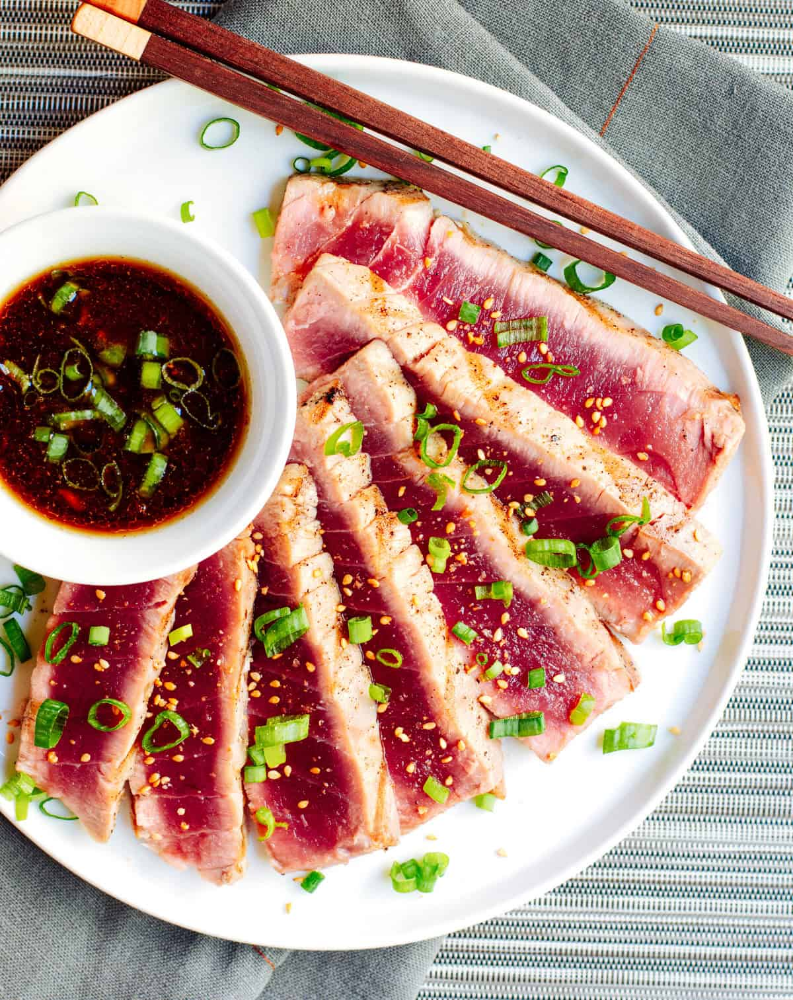

Grilled Tuna Steaks
Home

Description
It’s hard to think of a simpler, fresher and more bursting-with-flavor dish than Grilled Tuna Steaks served with an umami-loaded sesame soy dipping sauce! I grill ahi tuna over high heat, creating a rare center and beautiful grill marks, just like you see in upscale restaurants. As home cooks, we may feel a little intimidated to serve fish rare, assuming that only restaurant chefs can master this technique, but it’s surprisingly easy and fast.
The sesame soy dipping sauce with pleasantly spicy fresh ginger doubles as a marinade, saving you a few steps. All you need are a few simple ingredients and a couple of high-quality tuna steaks, ideally yellowfin tuna (often marketed as ahi tuna). However, this recipe works equally well with other types of tuna, such as: bluefin, bonito/skipjack, bigeye or albacore.
Ingredients
- Fresh Tuna Steaks: Yellowfin/ahi, bluefin, bigeye, skipjack or albacore work, although albacore is a little drier. Frozen tuna can be as high-quality as fresh if you can’t easily get fresh.
- Soy Sauce: Regular or low sodium soy sauce.
- Unseasoned Rice Vinegar: Be sure to use unseasoned rice vinegar, not the seasoned version that contains added sugar and salt.
- Honey: Your favorite variety.
- Green Onion: Look for a smooth, firm, bright green onion.
- Toasted Sesame Oil: While plain sesame oil has very little color or flavor, toasted sesame oil has a deep amber color and a nutty, toasty aroma and flavor.
- Fresh Ginger: Look for a plump fresh ginger hand with smooth, shiny skin.
- Garlic: Fresh garlic bulbs should be plump and firm with smooth, silvery skin.
- Olive Oil: Use whatever variety you have on hand – extra virgin olive oil isn’t essential here.
- Kosher Salt and Freshly Ground Black Pepper
Steps
- Whisk together dipping sauce ingredients (soy sauce, rice vinegar, honey, sesame oil, ginger, and garlic).
- Preheat grill to high. Rinse and dry tuna steaks then rub all sides with oil and season with salt and pepper.
- Grill tuna steaks until seared on the outside and rare in the middle, about 2 minutes per side. Transfer to cutting board and thinly slice tuna across the grain.